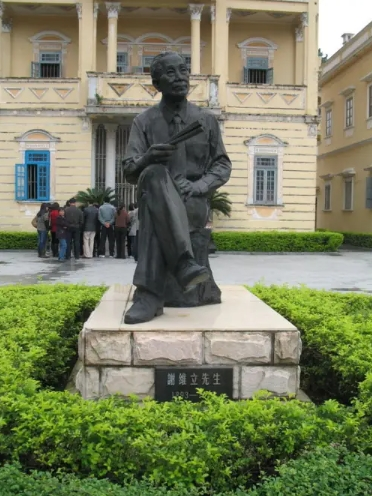

侨乡精神传承者
探索江门侨乡杰出人物的光辉事迹，感受他们以不同方式传承和发扬的侨乡精神。
快速索引
按姓氏首字母
按贡献领域
梁启超
1873-1929 · 维新变法领袖与思想家
教育文化
点击查看详情
冯如
1884-1912 · 中国航空之父
航空科技
点击查看详情
司徒美堂
1868-1955 · 爱国侨领领袖
革命事业
点击查看详情
陈宜禧
1844-1929 · 侨乡铁路建设先驱
工程建设
点击查看详情
邓荫南
1846-1923 · 革命义士
革命事业
点击查看详情

谢维立
1893-1970 · 立园创建者
建筑文化
点击查看详情
李金发
1900-1976 · 象征主义诗歌先驱
文学艺术
点击查看详情
伍盘照
1867-1933 · 侨报拓荒者
新闻传媒
点击查看详情
方君壮
1901-1971 · 侨校教育家
教育文化
点击查看详情
雷石榆
1911-1996 · 左联诗人
文学艺术
点击查看详情
陈瑞祺
1878-1945 · 侨茶公益家
商业公益
点击查看详情
黄洁
1899-1972 · 侨医仁术家
医学卫生
点击查看详情